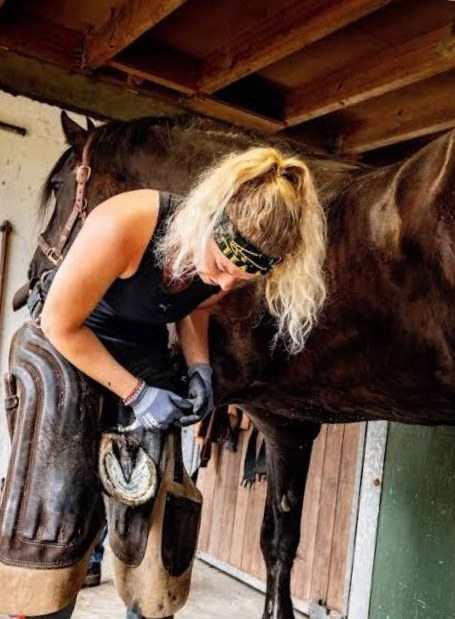
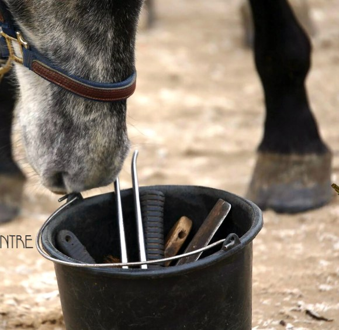
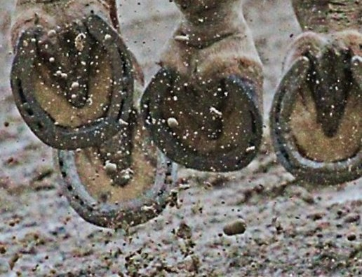
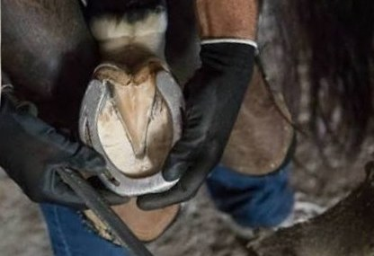
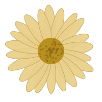
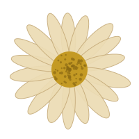
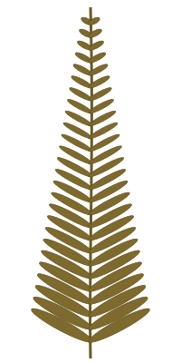

Mijn droombaan
Op deze website verzamel ik alles over het vak van hoefsmid: wat je verdient, welke opleiding je nodig hebt, hoe een werkdag eruitziet en waarom ik dit werk zo graag wil doen. Klik op een kaartje voor meer informatie.








Op deze website verzamel ik alles over het vak van hoefsmid: wat je verdient, welke opleiding je nodig hebt, hoe een werkdag eruitziet en waarom ik dit werk zo graag wil doen. Klik op een kaartje voor meer informatie.